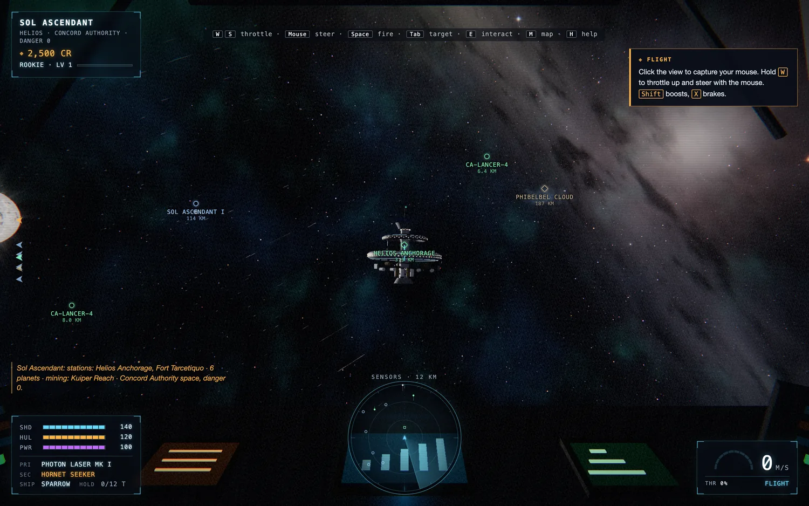
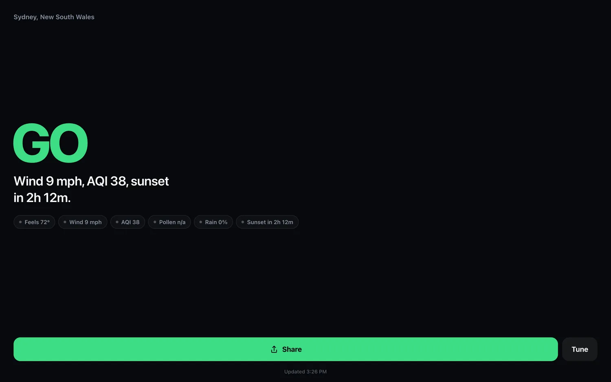
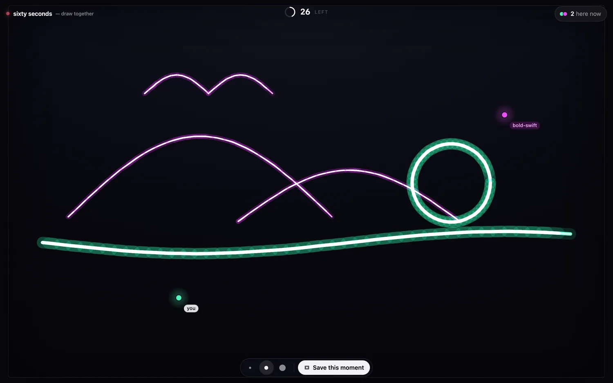
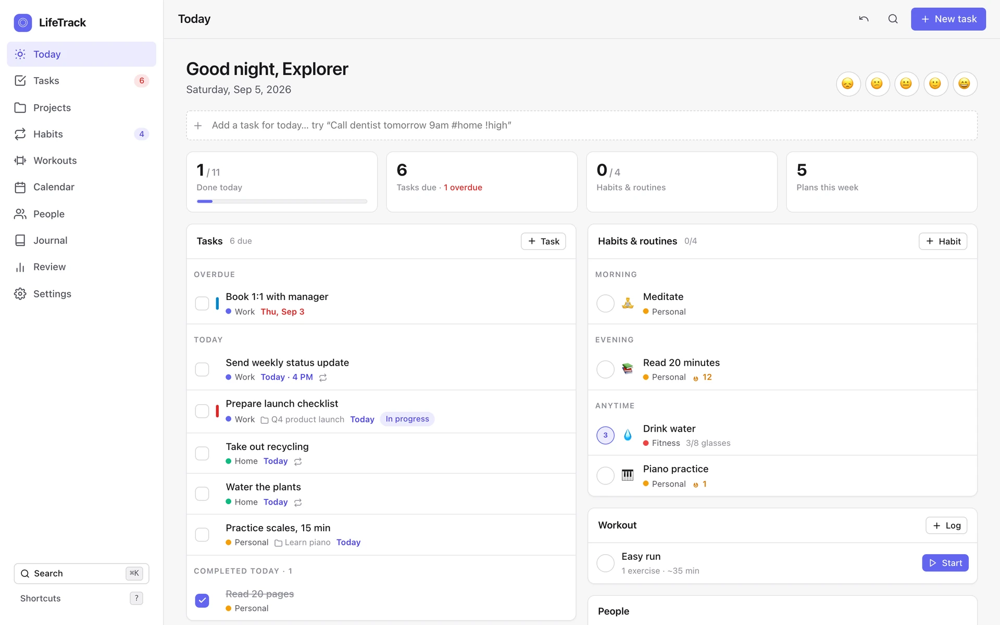

INSTRUMENT
BeatLayer
Drop in a guitar take and it lays synthesised drums under it, in your tempo, on your downbeat.
SOFTWARE ENGINEER. SERIAL MAKER.
Worlds, instruments, useful little things.
I’m AJ. Welcome to the workbench.
Make this angle 115°.
6 projects shown
Drop in a guitar take and it lays synthesised drums under it, in your tempo, on your downbeat.

Five tests of your eye a day. Draw a perfect circle. Tap the exact middle of a line. Stop a timer at ten seconds.

A first-person space sandbox in a browser tab. Sixty-four star systems, and you can dock at any of them.

One screen, one verdict: should you run outside right now?

Everyone on the page draws the same canvas. After sixty seconds the round closes, gets a name, and becomes a replay link. Then a new sixty seconds starts.

Tasks, projects, habits, workouts, the calendar, the people you keep meaning to see — one app, and none of it leaves your browser.
THERE’S A DAY JOB, TOO.
I’m a software engineer at Notable Health, working across voice AI, integrations, and the systems under them.
Computer science and astrophysics at UMass. Still learning by making things.